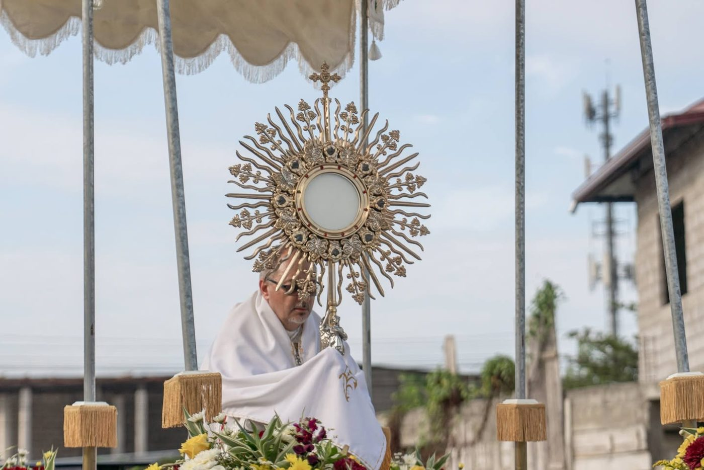
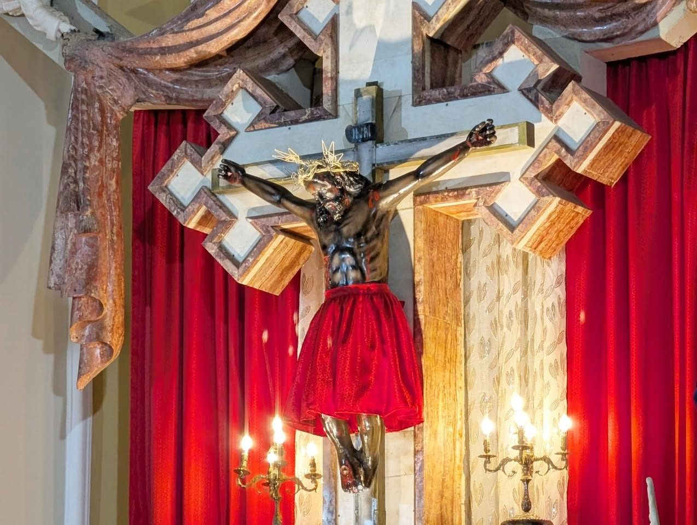
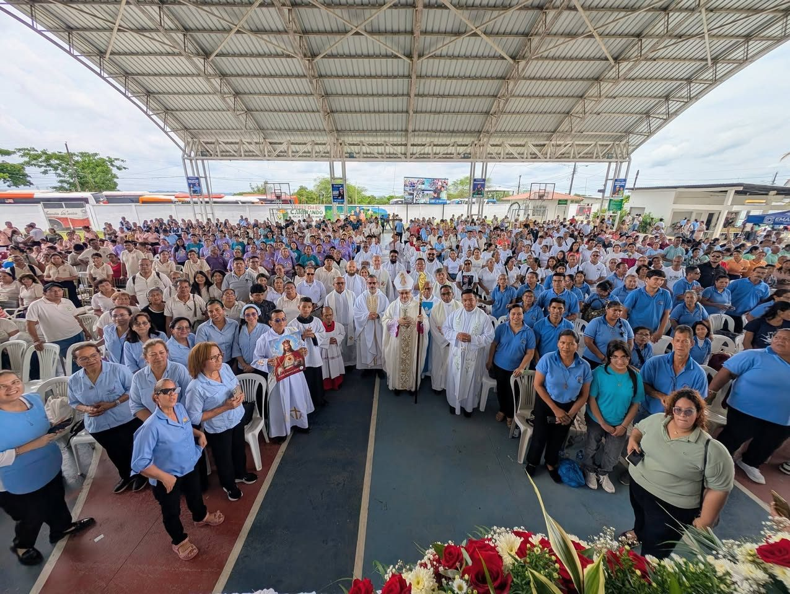
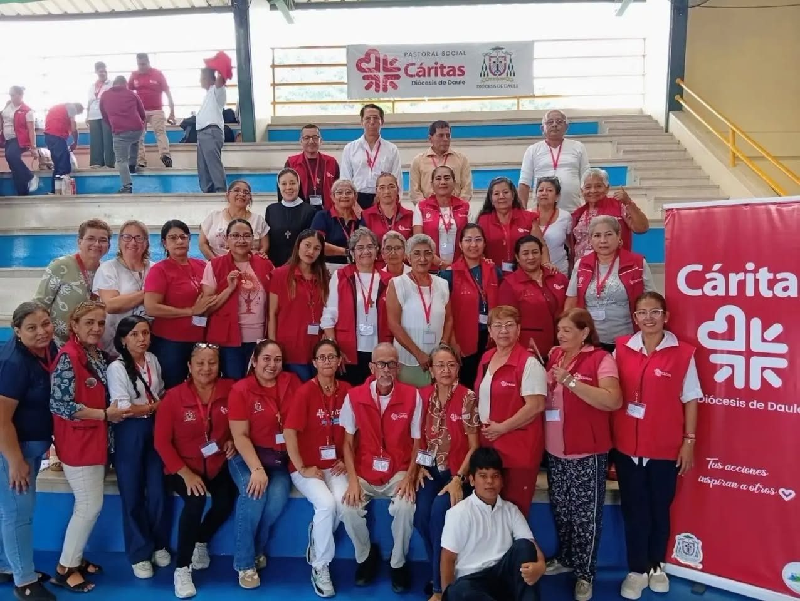

Mires donde mires, hay un paso que puedes dar hoy
El camino del discípulo misionero tiene cuatro momentos. Nadie empieza por el final, y nadie camina solo: en cada paso hay una comunidad de la diócesis que te acompaña.
Para los alejados, los indiferentes, los que buscan sin saberlo.

Encuéntrate con Cristo
Todo empieza por un encuentro, no por una lista de normas.
- Dios te ama con amor eterno y personal.
- El pecado ha herido esa relación.
- Jesucristo murió y resucitó por ti.
- Por la fe y la conversión, recibes una vida nueva.
- El Espíritu Santo te llena de poder y te envía a evangelizar.
El kerigma en cinco frases, del folleto diocesano «Iglesia en Salida».
Un paso para hoy
Ve a misa este domingo
Busca la parroquia más cercana a tu casa.
Encuentra tu parroquiaQuién te acompaña en este paso
- Ver las 30 parroquias
Tu parroquia
La misa del domingo, la adoración al Santísimo y la comunidad que te recibe.
- Conócela
Familia Eucarística Reparadora
Talleres eucarísticos: cinco encuentros semanales con adoración. Para adultos, jóvenes y niños.
- Conócela
Legión de María
Oración y servicio de la mano de María. Presente en once parroquias de la diócesis.

Vuelve a casa
Si te alejaste, la puerta sigue abierta. Nadie te va a pedir explicaciones.
Un paso para hoy
Habla con un sacerdote
Pide confesarte o simplemente conversar. En tu parroquia te dirán cuándo.
Dónde confesarteQuién te acompaña en este paso
- Conócela
Movimiento Juan XXIII
Retiros para jóvenes, mujeres y hombres, pensados sobre todo para quienes están lejos de la Iglesia. Presente en 17 parroquias.
- Conócela
Movimiento Emaús Misiones
Retiros de fin de semana a partir del camino de Emaús (Lc 24), para mujeres y hombres adultos. En San Alberto Magno y Santo Tomás Apóstol, La Aurora.

Crece en la fe
La fe se aprende caminando con otros: en la catequesis, en un grupo, en tu familia.
Un paso para hoy
Pregunta por la catequesis
Bautismo, primera comunión, confirmación, matrimonio: en tu parroquia te explican los requisitos.
Ir a tu parroquiaQuién te acompaña en este paso
- Conócela
Pastoral Catequética
2026 es el «Año del Kerigma»: catequesis familiar en toda la diócesis y formación mensual de catequistas.
- Conócela
Pastoral Juvenil
Encuentro Juvenil Diocesano, encuentros por zonas y la Peregrinación Juvenil de Cristo Rey.
- Conócela
Comunidad Misionera Jarcia
Comunidad de jóvenes misioneros: «Ser más, valer más, para servir mejor». En la catedral y en Santa Lucía.
- Conócela
Pastoral Familiar
Encuentros para matrimonios y familias, y la Jornada de los Abuelos y Mayores.
- Conócela
Pastoral de Liturgia
Coros y cantores, lectores, monaguillos, sacristanes y ministros extraordinarios de la Comunión.
- Conócela
Pastoral Vocacional
Semana Vocacional, convivencias y el Círculo Betania para quien se pregunta por su vocación.
- Conócela
Vida Consagrada
Las religiosas de la diócesis y sus convivencias vocacionales para chicas.

Sal a la misión
Lo recibido se comparte. El discípulo se vuelve misionero.
Misiones en recintos y periferias · visitas a enfermos y ancianos · escuelas de evangelización · misas en los sectores · procesiones y caminatas.
Un paso para hoy
Ofrece tu tiempo
Di en tu parroquia qué sabes hacer. Siempre hace falta alguien.
Hablar con tu parroquiaQuién te acompaña en este paso
- Conócela
Cáritas Daule
La caridad organizada de la diócesis. Para quien quiere ayudar y para quien necesita ayuda.
- Conócela
Obras Misionales Pontificias
Infancia Misionera y la colecta del DOMUND por las misiones del mundo.
- Conócela
Pastoral Pro Vida
Procesión por la Vida en la Anunciación, 40 Días por la Vida y oración por los no nacidos.
- Conócela
Misiones de Jarcia
Jóvenes que salen de misión en Semana Santa y llevan fogatas misioneras a los recintos.
- Conócela
Fundación Vita Profamilia
Acompañamiento a las familias y defensa de la vida.
- Conócela
Red Médica de la Diócesis (REMEDIC)
Atención de salud al servicio de las comunidades.
¿No sabes por dónde empezar? Empieza por tu parroquia.
Encuentra tu parroquiaTodas las pastorales y movimientos